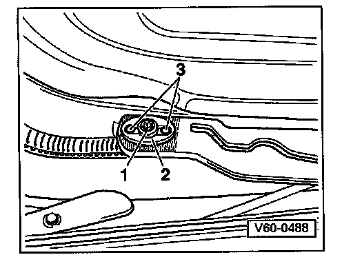

Removal
Sunroof Glass Panel Removal

- Tilt sunroof open.
- Slide headliner -1- toward rear.
- Slide trim frame -2- toward rear (clipped on in area of front guide -3- and guided at rear by guide -4-)

- Remove Torx� T25 screws -1- and adjusting plates -2-. Adjusting plates -2- are positioned by guide pins -3-.
- Move sunroof panel upward and out.
- To remove trim frame (if necessary) pull forward and upward out of roof cutout.